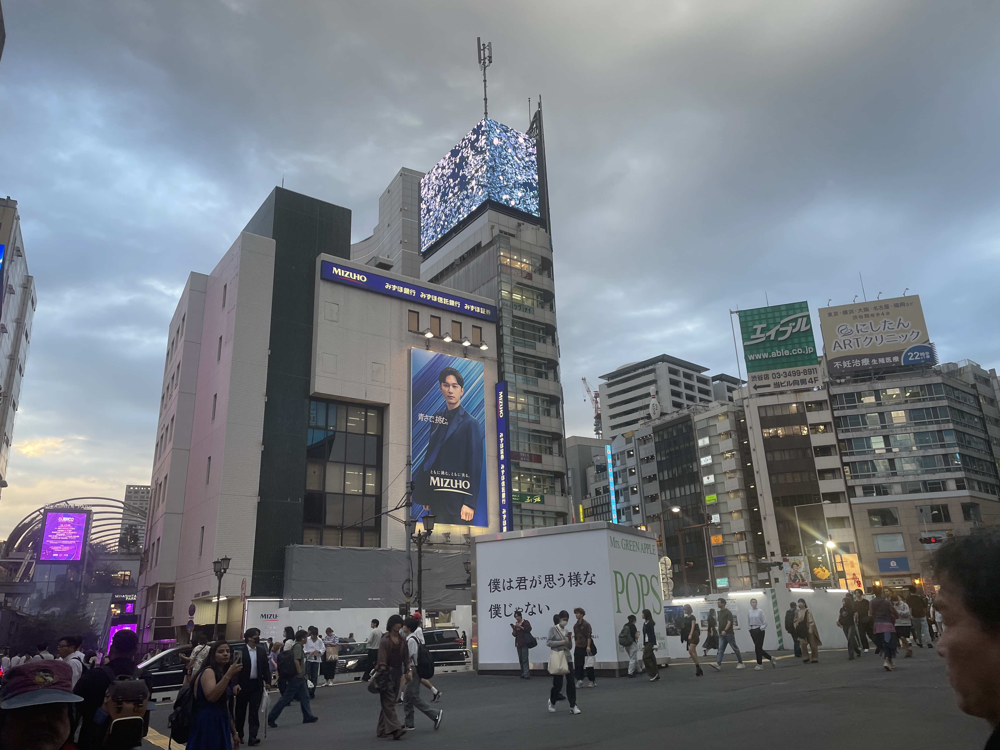
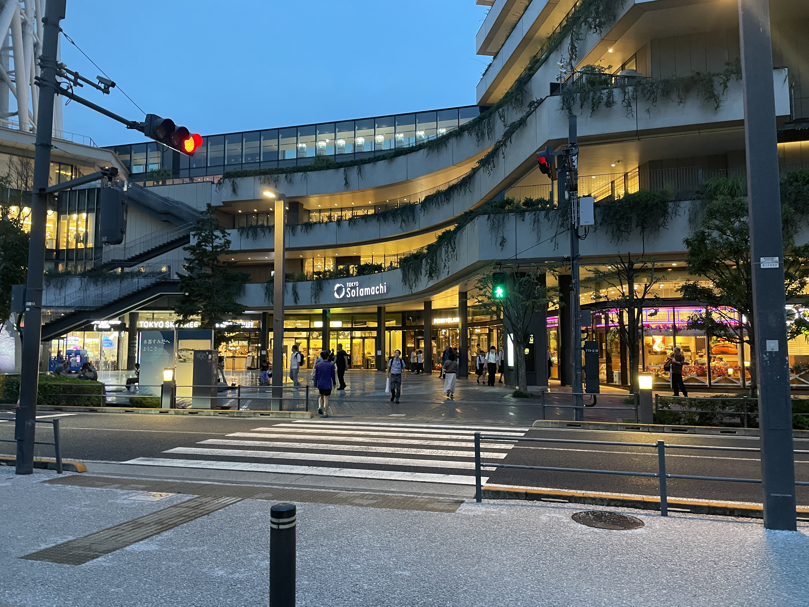
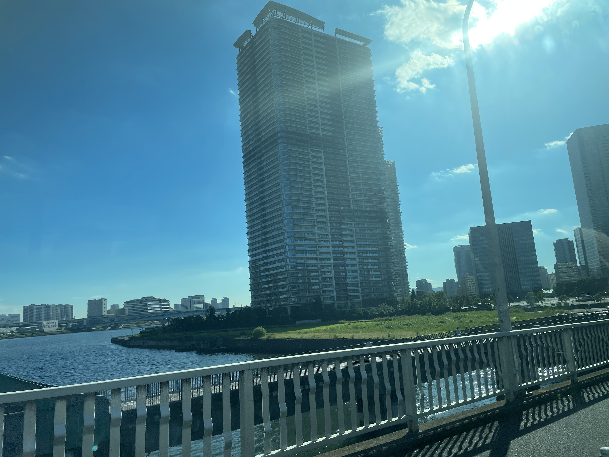
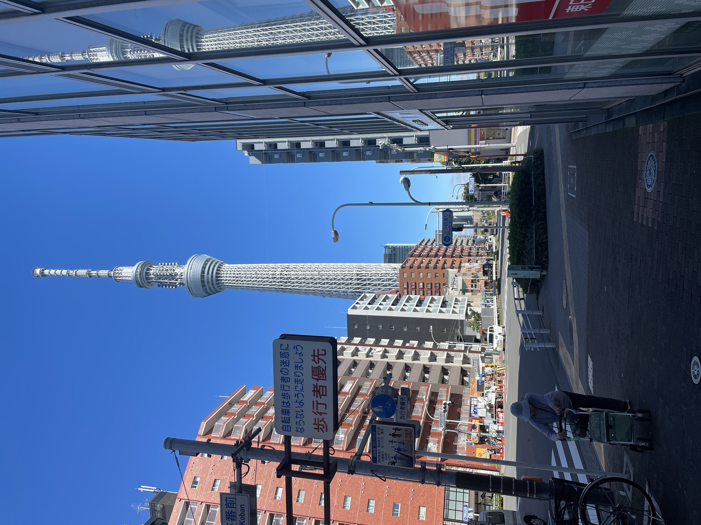

1
Shimbashi
Office-town energy, old-school alleys and the start of the journey.

Ride from Shimbashi through Ginza, Tsukiji and Tokyo's waterfront to Tokyo Skytree — one city bus, many sides of Tokyo.
Adult fare for regular Toei Bus routes within Tokyo's 23 wards. Check official information for the latest service details.
A selected sightseeing guide to some of the neighborhoods and views along GYO-10. These are highlights, not a complete stop list.

Office-town energy, old-school alleys and the start of the journey.
Elegant avenues, flagship stores and one of Tokyo's best-known cityscapes.
Food culture, market atmosphere and plenty to explore on foot.

Toyosu and Kachidoki bring open water, bridges and a modern skyline into view.

Finish beneath one of Tokyo's most recognizable landmarks.
The basics below apply to Toei Bus services within Tokyo's 23 wards. For the latest details, use the official links.
Unlimited rides on Toei buses within Tokyo's 23 wards for one day, except Koto 01.
Purchase methods can change. Check the Tokyo Metropolitan Bureau of Transportation for current options.
Timetables, route changes and current service information should always be confirmed on official services.

Toei GO Tokyo is an independent travel app. It is not an official app of the Tokyo Metropolitan Government or Tokyo Metropolitan Bureau of Transportation.